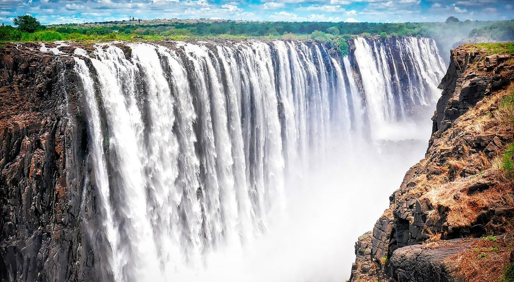

Pelitilanne
| Pelaajan nimi | |
| Käytetyt co2-päästöt: 0 kg | CO2-budjetti: 10 000 kg |
Nykyinen sijainti
Matkamuistot
-
Puinen käsikoru -
Norsu patsas -
Boomerang -
Poro avaimenperä -
Colosseum patsas -
Pääkallo koriste-esine -
Christ the redeemer-patsas